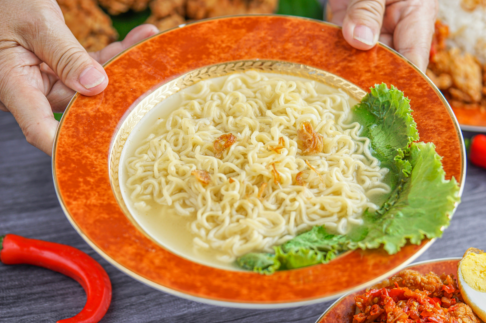

Recipes Page
Cooked Noodles
Ingredients:
- 200g noodles
- 1 tablespoon oil
- 2 cups water
- Salt to taste
- 1/2 cup mixed vegetables (carrot, capsicum, cabbage)
- 1 tablespoon soy sauce
- 1 tablespoon chili sauce
- 1 teaspoon vinegar
- 1 teaspoon garlic, minced
- 1 teaspoon ginger, grated
Instructions:
1. Boil water in a pot and add noodles with a pinch of salt. Cook until noodles are soft.
2. Drain the water and keep noodles aside.
3. Heat oil in a pan, add garlic and ginger. Saute for a minute.
4. Add mixed vegetables and saute until they are slightly cooked.
5. Add cooked noodles, soy sauce, chili sauce, vinegar, and salt. Mix well and cook for 2-3 minutes.
6. Serve hot.
Chatpate
Ingredients:
- 2 cups puffed rice
- 1/2 cup chopped onion
- 1/2 cup chopped tomato
- 1/4 cup chopped cucumber
- 1/4 cup chopped coriander leaves
- 1 green chili, finely chopped
- 1 tablespoon lemon juice
- 1 teaspoon chaat masala
- 1/2 teaspoon roasted cumin powder
- Salt to taste
Instructions:
1. In a large bowl, mix puffed rice, chopped onion, tomato, cucumber, coriander leaves, and green chili.
2. Add lemon juice, chaat masala, roasted cumin powder, and salt. Toss well to combine.
3. Serve immediately.
Rice

Ingredients:
- 1 cup rice
- 2 cups water
- Salt to taste
Instructions:
1. Rinse the rice under cold water until the water runs clear.
2. In a pot, add rice, water, and salt. Bring to a boil over medium heat.
3. Reduce the heat to low, cover, and simmer for 18-20 minutes, or until rice is tender and the water is absorbed.
4. Fluff the rice with a fork and serve hot.
Grilled Chicken

Ingredients:
- 4 chicken breasts
- 2 tablespoons olive oil
- 2 cloves garlic, minced
- 1 teaspoon paprika
- 1/2 teaspoon salt
- 1/4 teaspoon black pepper
- 1 lemon, juiced
- 1 tablespoon chopped parsley
Instructions:
1. Preheat grill to medium-high heat.
2. In a small bowl, mix olive oil, minced garlic, paprika, salt, and black pepper.
3. Brush chicken breasts with the olive oil mixture.
4. Grill chicken for 6-8 minutes per side, or until cooked through.
5. Remove from grill and squeeze lemon juice over the chicken.
6. Sprinkle with chopped parsley before serving.
Fruit Salad

Ingredients:
- 2 cups strawberries, sliced
- 1 cup blueberries
- 1 cup grapes, halved
- 2 kiwis, peeled and sliced
- 1 banana, sliced
- 1 tablespoon honey
- 1 tablespoon fresh lime juice
Instructions:
1. In a large bowl, combine strawberries, blueberries, grapes, kiwis, and banana.
2. Drizzle honey and fresh lime juice over the fruit.
3. Gently toss until fruit is evenly coated.
4. Serve immediately or refrigerate until ready to serve.
Vegetable Stir Fry
Ingredients:
- 2 cups mixed vegetables (bell peppers, broccoli, carrots, snap peas)
- 2 tablespoons soy sauce
- 1 tablespoon sesame oil
- 2 cloves garlic, minced
- 1 teaspoon ginger, grated
- 1 tablespoon vegetable oil
- Salt and pepper to taste
Instructions:
1. Heat vegetable oil in a large pan over medium-high heat.
2. Add minced garlic and grated ginger, sauté for 1 minute.
3. Add mixed vegetables to the pan and stir-fry until tender-crisp.
4. In a small bowl, mix soy sauce and sesame oil, then pour over the vegetables.
5. Season with salt and pepper to taste.
6. Serve hot as a side dish or over cooked rice.
Spaghetti Carbonara

Ingredients:
- 8 oz spaghetti
- 4 slices bacon, chopped
- 2 cloves garlic, minced
- 2 eggs
- 1/2 cup grated Parmesan cheese
- Salt and black pepper to taste
- Fresh parsley for garnish
Instructions:
1. Cook spaghetti according to package instructions. Drain and set aside, reserving 1/2 cup of pasta water.
2. In a large skillet, cook chopped bacon until crispy. Add minced garlic and cook for another minute.
3. In a small bowl, whisk together eggs, grated Parmesan cheese, salt, and black pepper.
4. Add cooked spaghetti and reserved pasta water to the skillet with bacon and garlic. Toss to coat.
5. Remove skillet from heat and quickly stir in the egg mixture, tossing until the spaghetti is coated and creamy.
6. Garnish with fresh parsley and serve immediately.
Chicken Tikka Masala

Ingredients:
- 1 lb boneless, skinless chicken thighs, cut into bite-sized pieces
- 1 cup plain yogurt
- 2 tablespoons olive oil
- 3 cloves garlic, minced
- 1 tablespoon ginger, grated
- 2 teaspoons garam masala
- 1 teaspoon ground cumin
- 1 teaspoon paprika
- 1/2 teaspoon turmeric
- 1/2 teaspoon cayenne pepper
- 1 can (14 oz) crushed tomatoes
- 1 cup heavy cream
- Salt and black pepper to taste
- Chopped cilantro for garnish
Instructions:
1. In a large bowl, combine yogurt, olive oil, minced garlic, grated ginger, garam masala, ground cumin, paprika, turmeric, and cayenne pepper.
2. Add chicken pieces to the marinade and toss to coat. Cover and refrigerate for at least 1 hour, or overnight.
3. Heat a large skillet over medium heat. Add marinated chicken and cook until browned and cooked through, about 8-10 minutes.
4. Stir in crushed tomatoes and heavy cream. Simmer for 10-15 minutes, stirring occasionally, until the sauce thickens.
5. Season with salt and black pepper to taste. Garnish with chopped cilantro before serving.
Chocolate Chip Cookies
Ingredients:
- 1 cup unsalted butter, softened
- 1 cup granulated sugar
- 1 cup packed brown sugar
- 2 large eggs
- 1 teaspoon vanilla extract
- 3 cups all-purpose flour
- 1 teaspoon baking soda
- 1/2 teaspoon salt
- 2 cups semisweet chocolate chips
Instructions:
1. Preheat oven to 350°F (175°C). Line baking sheets with parchment paper.
2. In a large mixing bowl, cream together softened butter, granulated sugar, and brown sugar until light and fluffy.
3. Beat in eggs, one at a time, then stir in vanilla extract.
4. In a separate bowl, whisk together all-purpose flour, baking soda, and salt. Gradually add dry ingredients to the creamed mixture and mix until just combined.
5. Fold in semisweet chocolate chips.
6. Drop rounded tablespoons of dough onto prepared baking sheets, leaving enough space between cookies for spreading.
7. Bake in preheated oven for 10-12 minutes, or until edges are golden brown. Allow cookies to cool on baking sheets for 5 minutes before transferring to wire racks to cool completely.